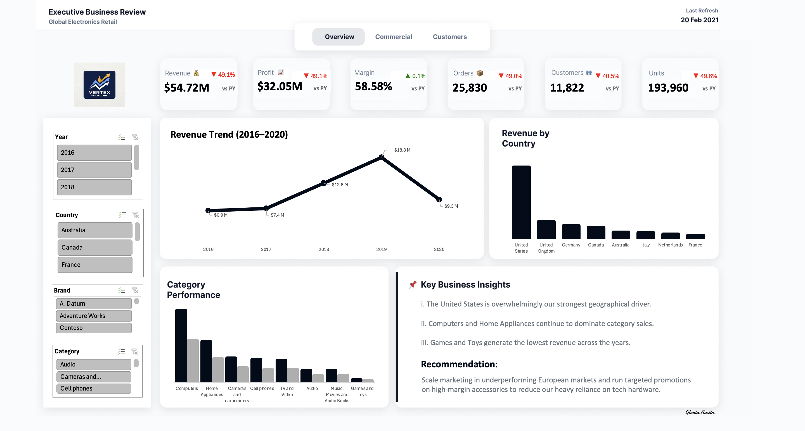
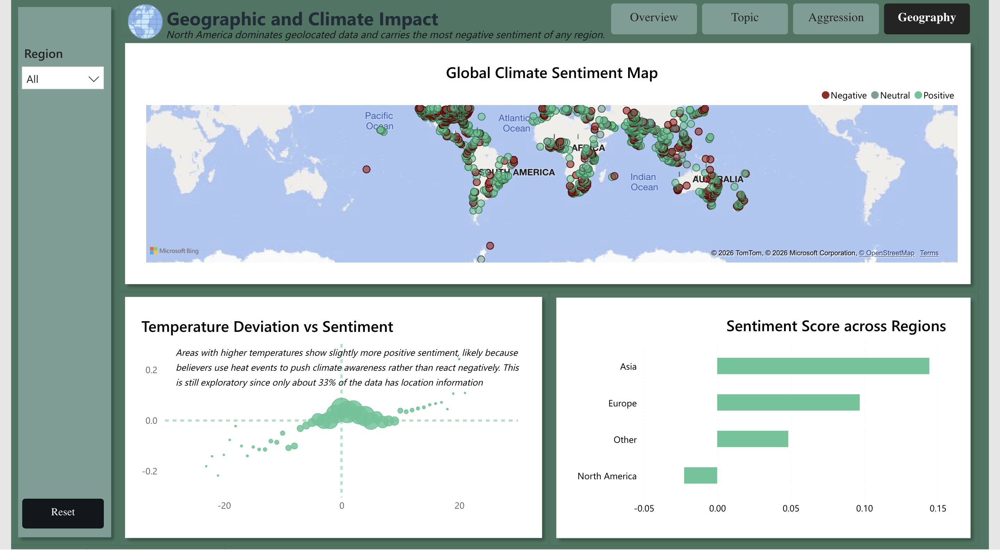
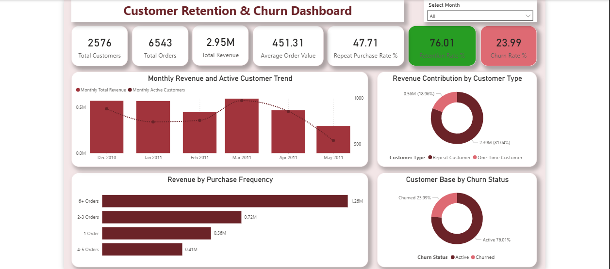
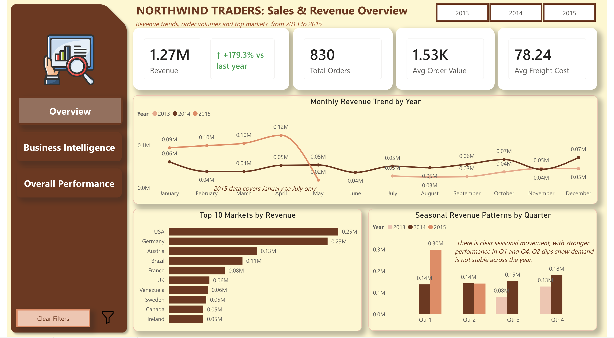
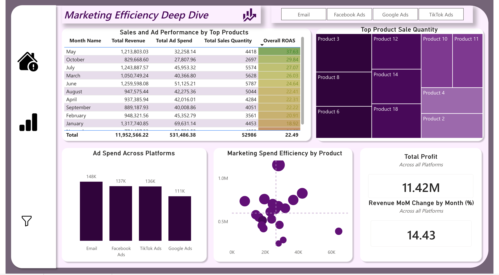

Executive Business Review Dashboard
Built a multi-page executive dashboard in Microsoft Excel to consolidate revenue, profitability, customer, and regional performance metrics into a single reporting solution for leadership teams.
I transform business and operational data into executive-ready insights through interactive dashboards, SQL analytics, KPI reporting, and business intelligence solutions. My work helps organisations monitor performance, identify opportunities, and make better data-driven decisions.
Portfolio Projects
Million Records Analysed
Analytics Technologies
Interactive Dashboards
Turning business activity into measurable performance insights.
I am a Business Intelligence and Data Analyst with hands-on experience using Power BI, SQL, Excel, and Python to transform business and operational data into actionable insights.
My work spans business intelligence, operational analytics, customer analysis, KPI reporting, executive dashboards, and performance monitoring. I focus on translating business activities into measurable metrics, identifying performance gaps, and building reporting solutions that support better decision-making.
Technologies I use to clean, analyse, visualise, and communicate business insights.
Power Query • Pivot Tables • Dashboard Development
Joins • CTEs • Window Functions • Query Optimisation
DAX • KPIs • Data Modelling • Interactive Dashboards
Pandas • NumPy • Matplotlib
Version Control • Collaboration • Portfolio Hosting
A selection of business intelligence and analytics projects demonstrating dashboard development, SQL analytics, reporting automation, and data storytelling.

Built a multi-page executive dashboard in Microsoft Excel to consolidate revenue, profitability, customer, and regional performance metrics into a single reporting solution for leadership teams.

Processed and analysed over 15.7 million climate-related tweets using PostgreSQL and Power BI to identify sentiment trends, geographic patterns, and executive-level insights from large-scale social media data.

Designed a customer analytics dashboard that identified purchasing behaviour, retention patterns, churn drivers, and revenue contribution, enabling businesses to prioritise high-value customers.

Performed SQL-driven business analysis to evaluate product performance, customer behaviour, profitability, and regional sales trends for strategic decision-making.

Created an interactive Power BI dashboard to monitor sales, marketing performance, KPIs, and campaign effectiveness through dynamic visualisations and DAX calculations.
Building data-driven solutions across business intelligence, operations, analytics, and research.
Dylte Beauty & Wellness • Hybrid, Lagos
Built and maintained Power BI dashboards to monitor sales, marketing, customer engagement, and operational performance metrics.
Analysed campaign performance and customer data to identify underperforming initiatives, contributing to a 40% increase in brand visibility through improved targeting strategies.
Developed KPI reporting frameworks that improved visibility into business operations and enabled more data-driven decision-making.
Identified workflow bottlenecks through operational data analysis, helping reduce executive response lag by 30%.
Maintained structured datasets and reporting systems to support accurate performance tracking and executive reporting, while translating business activities into measurable metrics and actionable insights for leadership.
2024 – 2026Designed and delivered seven end-to-end business intelligence projects covering executive reporting, SQL analytics, Power BI dashboards, Excel automation, customer analytics, and performance monitoring.
2026Co-authored a peer-reviewed publication investigating the protective role of Puerarin against oxidative stress through NRF2 activation, strengthening my research and analytical foundation.
2024Graduated with First Class Honours from Landmark University, developing strong analytical thinking, statistical reasoning, and scientific research skills that complement my work in data and business intelligence.
Landmark UniversityI'm currently seeking Business Intelligence, Data Analytics, Reporting, and Analytics Engineering opportunities where I can deliver measurable business value through data.
Whether you're hiring, looking for a collaborator, or simply want to discuss analytics, I'd love to connect.